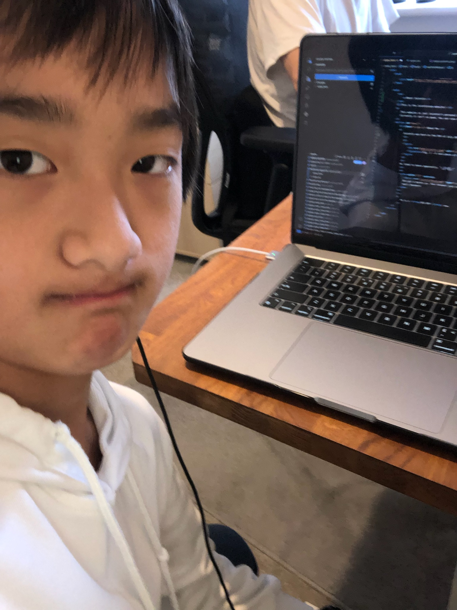

About Me
Juicetin was born in 2012.

Fig. 1 - A rare photo of a baby Juicetin.
He liked to dance apparently. ¯\_(ツ])_/¯
He is a BIG BOY now.

Fig. 2 - A big boi Juicetin
Because Juicetin is a sad little boy, he plays melee and mains Marth. He also plays SSBU and mains Falco and Sheik, and secondaries Puff!